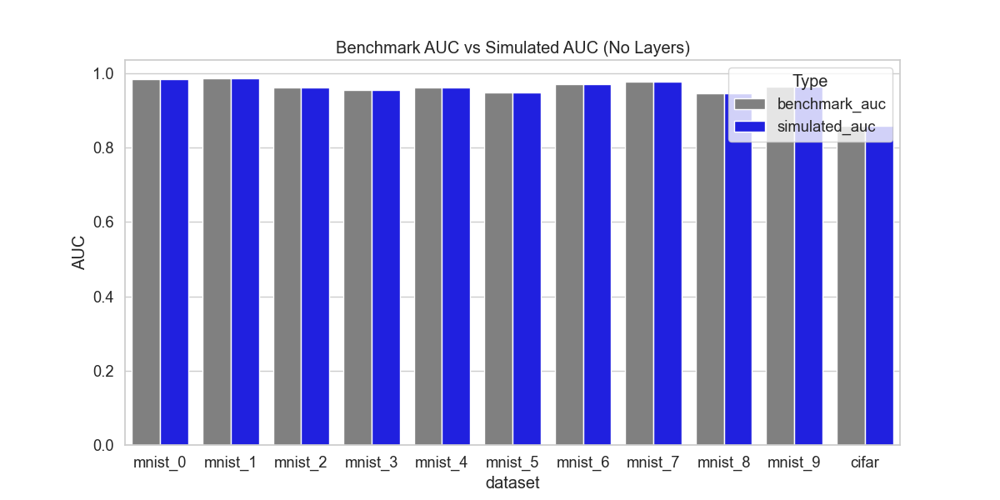
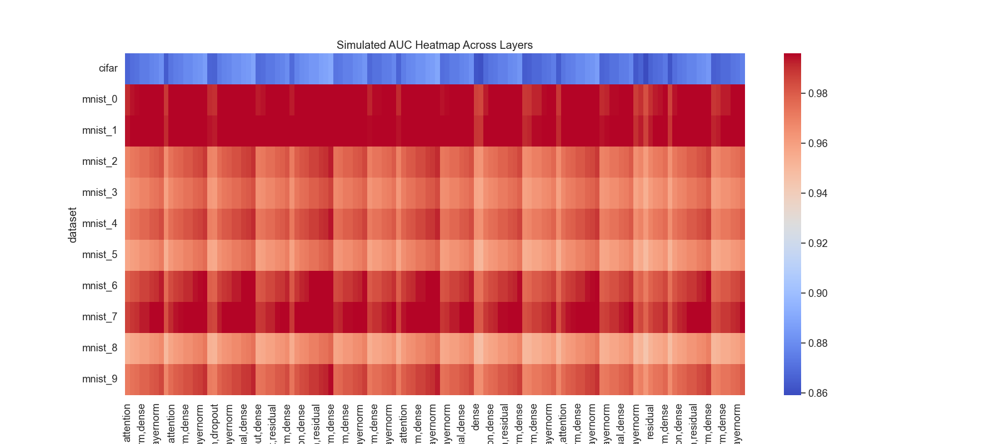
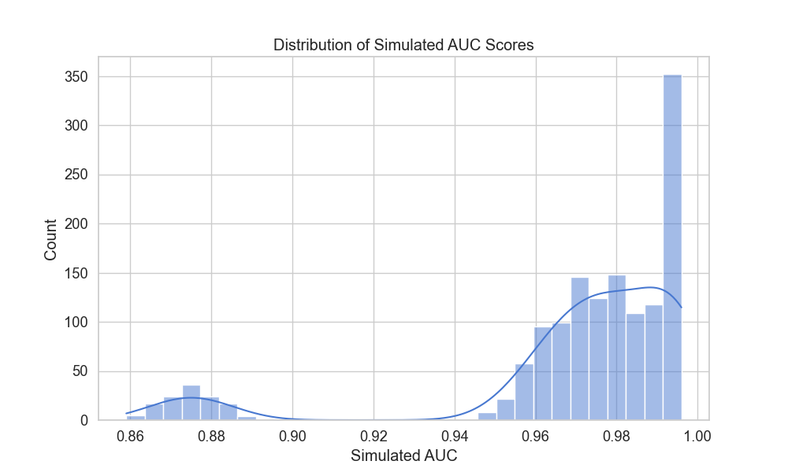
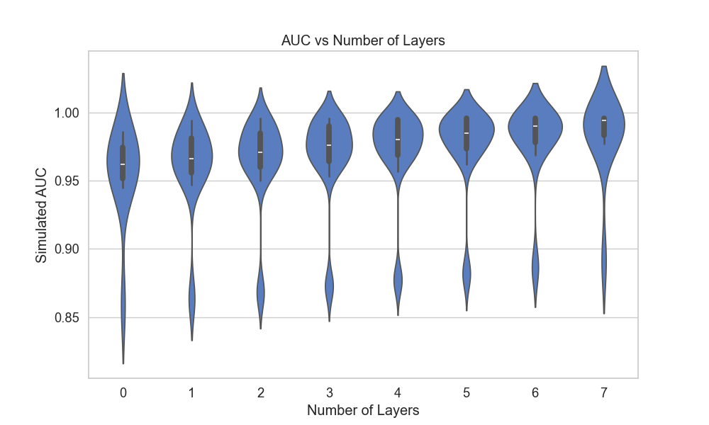
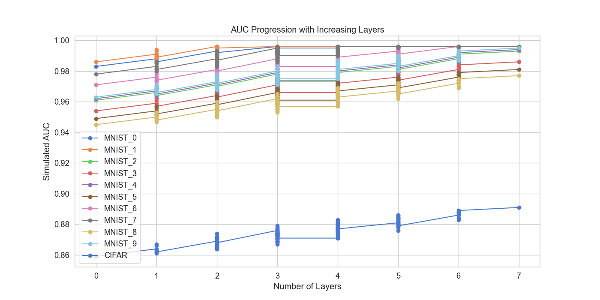
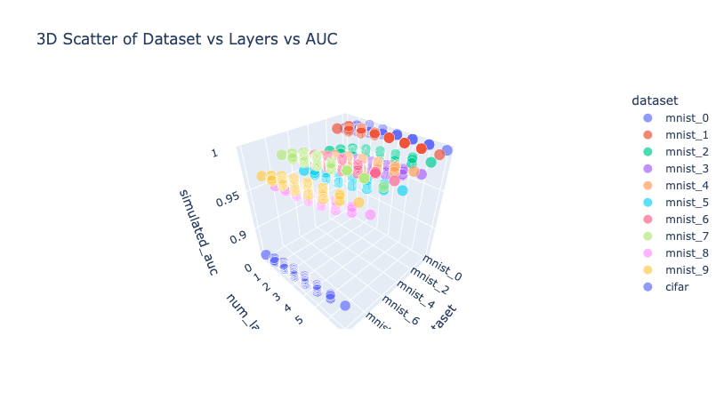
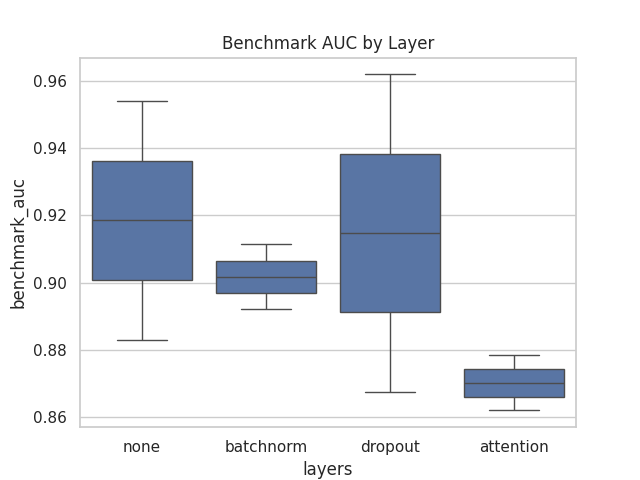
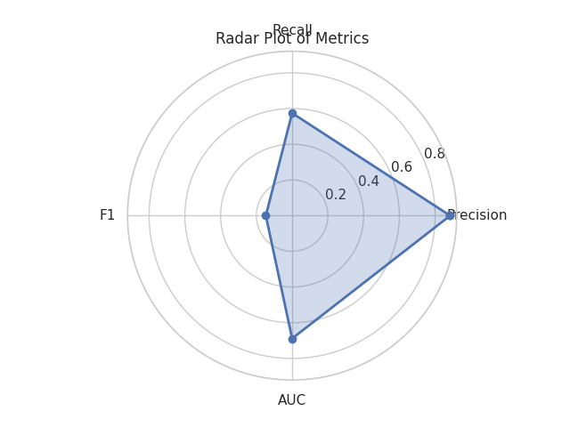
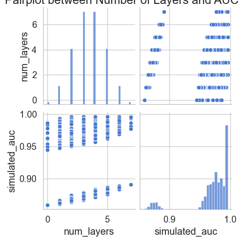
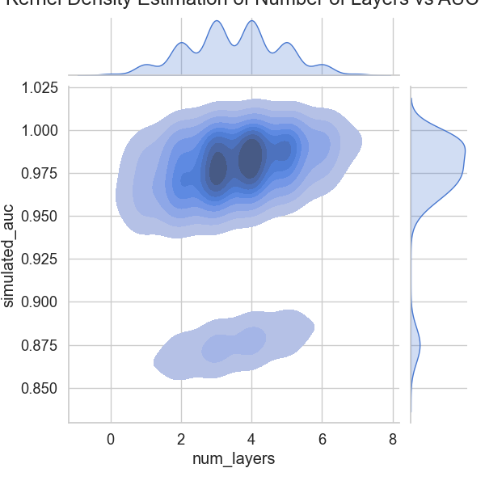

Deep One-Class AUC Visualizer
Preprocessing Layers:
Midprocessing Layers:
Postprocessing Layers:
Python-Generated AUC Visualizations
1. Benchmark vs Simulated AUC (Bar Plot)

2. Heatmap of Simulated AUC

3. Histogram of Simulated AUC

4. Violin Plot of AUC by Layer

5. Line Plot of Simulated AUC

6. 3D Scatter Plot

7. Boxplot of Simulated AUC

8. Radar Plot of Top Simulated AUCs

9. Pairplot of Layers vs AUC

10. KDE Jointplot
